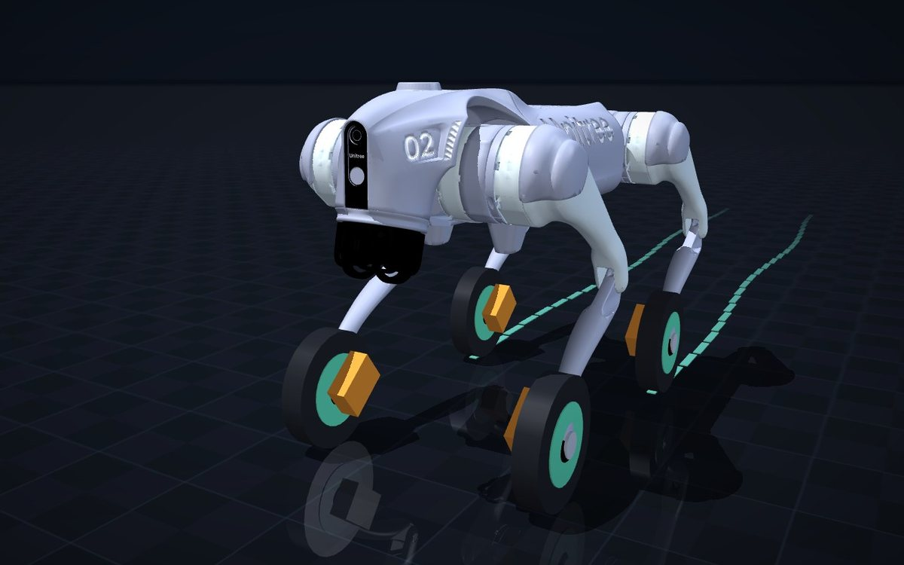

Skating Quadruped: Passive Braked Wheels for Efficient Locomotion
My own locomotion idea: fit a quadruped with passive, brakeable wheels and let it glide, brake and step. Across ~310,000 simulated trials on six robots and 11+ terrains it used ~21% less energy per metre (median 35%) and moved 1.44× faster than walking — confirmed in both MuJoCo and PhysX.

Legged robots are versatile but every step costs energy; wheel-legged robots are efficient on flat ground but need a motor in every wheel. My idea sits in between: give a 12-DoF quadruped a small passive wheel with a brake under each foot. Releasing the brakes lets it glide; locking a pair turns those wheels into push-off anchors; locking all four falls back to walking — so the robot skates rather than walks.
Over 23 rounds I compared three architectures — point feet, braked passive wheels and hub-motor wheel-legs — on six quadruped models (Go2, A1, Lite3, MagicDog, ZSL-1, B2) with real-part mass and brake accounting, using MuJoCo as the main engine and NVIDIA PhysX (Isaac Lab) as a cross-check. Every headline claim was re-run by an independent verifier on fresh seeds.
Results vs point feet
Where it wins — and where it doesn't
- Gliding drops leg power from 100–145 W when walking to about 15 W, so it saves 20–56% per metre and is ~45% faster on flat ground, ice, rough pavement and moderate downhills.
- It loses on climbing (per mission), gravel, stairs and downhills steeper than about −24°; every fall happened after degrading from gliding to locked-wheel walking.
- Against hub-motor wheel-legs there is no winning scenario: driven wheels are cheaper everywhere, and the parking advantage disappears once the rival also gets a parking brake — an honest negative result.
- The brake technology decides the energy result: a power-off brake sized to 4 N·m with current-mode PWM holding recovers most of the ideal saving while staying fail-safe.
Method
- Mechanism models down to a single 2 ms control step — e.g. the support-swap collapse that sets the 0.60 m/s speed cap, and a wheel-radius vs mass/inertia decomposition that picks the ×1.5 wheel.
- Pre-registered criteria, held-out seeds and terrains, deduplicated physics runs and both per-metre and per-mission accounting; ~75 adversarial verifications.
- Nineteen simulator pitfalls documented — each had overturned a conclusion — including a PhysX angular-velocity limit silently interpreted in degrees per second.
- An 11-page paper draft (v3) has been fact-checked number by number; the next step is a hardware prototype.
Skills & Technologies
- MuJoCo
- Isaac Lab / PhysX
- PPO
- Locomotion Control
- Energy Modelling
- Experimental Design & Statistics
- Python